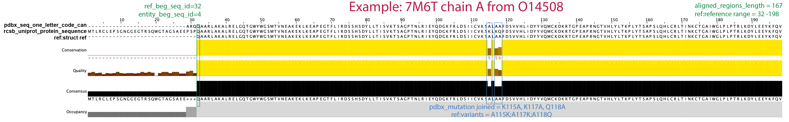

Overview¶
CoDIAC uses three key databases (Uniprot, Interpro, PDB) in the following steps:
Interpro: We use Interpro to fetch all Uniprot accessions that have an Interpro ID in a given species.
uniprot_IDs, species_dict = CoDIAC.InterPro.fetch_uniprotids(Interpro_ID, REVIEWED=True, species='Homo sapiens')Where Reviewed can be False (returning all protein records). Species names are the same as defined by Uniprot (search Uniprot taxonomy to find the correct species nameUniprot (Uniprot Reference File): Given a set of uniprot IDs, such as above
uniprot_IDs, we next define the human protein reference and information for all uniprot IDs. This reference generation also uses Interpro to determine domain boundaries.uniprot_df = CoDIAC.UniProt.makeRefFile(uniprot_IDs, uniprot_reference_file)We will refer to uniprot_reference_file from here as the Uniprot Reference File. You may want to manually check that the domains included are of interest to your final analysis. You can generate the FASTA reference file of the domain of interest in the following way:CoDIAC.UniProt.print_domain_fasta_file(uniprot_reference_file, Interpro_ID, fasta_long_header_file, n_term_offset=0, c_term_offset=0, APPEND=False)This will produce a fasta reference file with a verbose fasta header (hence we print this to fasta_long_header_file) To produce a reference file with a more manageable header (such as what promals3d will take without truncating the header)key_array_order= ['uniprot', 'gene', 'domain_num', 'start', 'end']CoDIAC.UniProt.translate_fasta_to_new_headers(fasta_long_header_file, fasta_file, key_array_order)Which produces a finalfasta_filewe will use for alignment and mapping.PDB (PDB Reference File): The Uniprot Reference File includes a listing of structure accessions that exist for a protein. These structures may or may not cover the Interpro Domain of interest, but we next fetch all PDBs that are connected to a protein in the Uniprot Reference File
CoDIAC.PDB.generateStructureRefFile_fromUniprotFile(uniprot_reference_file, PDB_file)This produces PDB_file, which we will refer to as the PDB Reference File.PDB + Uniprot (Integrated PDB Reference File). Now, in order to map domains onto whether and where they appear in the PDB structures, we have to integrate information in the Uniprot Reference File with that of the PDB File
struct_df_out = CoDIAC.IntegrateStructure_Reference.add_reference_info_to_struct_file(PDB_file, uniprot_reference_file, PDB_file_annotated, INTERPRO=True, verbose=False)INTERPRO=Truewill use the Interpro domains, otherwise it will use the Uniprot domain boundaries when mapping.PDB_file_annotatedis the output and we will refer to this as the Integrated PDB Reference FileFinally, we reduce the Integrated PDB Reference File to contain only structures that span completely the Interpro_ID of choice.
CoDIAC.IntegrateStructure_Reference.filter_structure_file(PDB_file_annotated, Interpro_ID, PDB_file_filtered)PDB_file_filteredis the main output and it is a subset of the Integrated PDB Reference File that will be of interest for further analysis. However, all the columns and information are the same as the parent file, so please refer to that section below.
File column definitions¶
Uniprot Reference File (CSV file, comma-separated between columns)¶
UniProt ID: The Uniprot accession ID for the protein
Gene: gene name
Species: Species, using Uniprot taxonomy
Ref Sequence: Full protein sequence as defined by Uniprot - canonical sequence
PDB IDs: semicolon separated list of PDB IDs
Uniprot Domains: These are domains and domain boundaries as defined by the Uniprot database. The semicolon separated domain list is defined as the following colon-separated details for each domain (name:domain start:domain end)
Uniprot Domain Architecture: This is the architecture of the protein, defined by domains only and ordered in the same way as they appear in the protein from N- to C-terminal. Domains are separated by ‘|’
Interpro Domains: These are domains and domain boundaries as defined by the Interpro database. The semicolon separated domain list is defined as the following colon-separated details for each domain, just like Uniprot, but now an additional element to keep the InterproID (name:Interpro domain ID:domain start:domain end)
Interpro Domain Architecture: This is the architecture of the protein, defined by domains of Interpro only and ordered in the same way as they appear in the protein from N- to C-terminal. Domains are separated by ‘|’
PDB Reference File (CSV file, comma-separated, columns all use capitalization)¶
This file contains a myriad of sequences, which arises from the fact that experimental structures typically can include purification or detection tags (non-native protein sequence), fractions of the protein of interest, and variants of proteins, compared to the current reference. Hence, we compile all of these as we setup to understand how an experimental structure captures information about the current uniprot sequences.
PDB_ID - PDB identifier of the structure
ENTITY_ID - ID of the entity on that line (sometimes many entities to one structure)
CHAIN_ID - Chain IDs associated with the polymer entity
pdbx_description - A description of the polymer entity
rcsb_gene_name - Gene name associated with the entity
pdbx_gene_src_scientific_name - Scientific name of the organism from which the gene originates
pdbx_seq_one_letter_code - Sequence of protein or nucleic acid polymer that corresponds with the entity
pdbx_seq_one_letter_code_can - this is the one letter code of the structure sequence. This is what we use in integration to align with generated reference file.
rcsb_sample_sequence_length - The monomer length of the sample sequence.
modifications locations - a semicolon-separated list of positions (in structure-based numbering) where modifications (MODRES) exist in the structure sequence.
modifications - a semicolon-separated list that includes the controlled PTM vocabulary of PDB and the position. For example
PTR-5indicates phosphotyrosine at position 5 in the structure sequence. To find the meaning of a MODRES search:https://www.rcsb.org/ligand/PTR, replace PTR with the code of interest.rcsb_entity_polymer_type - A coarse-grained polymer entity type.
macromolecular_type - type of polymer
database_name - Reference database name (database_accession column holds the accession number for the entity)
database_accession - Reference database accession code
rcsb_uniprot_protein_sequence - Protein sequence data for canonical protein sequence (refers to the protein sequence found through UniProt)
entity_beg_seq_id - points to the position in the entity sequence that aligns with the canonical sequence
ref_beg_seq_id - points to the position in the canonical sequence that aligns with the entity sequence
aligned_regions_length - length of the aligned regions between the entity and canonical sequences
mutations exist - Tells us if there are any mutations present in the entity sequence
rcsb_mutation_count - Number of mutations present in the entity sequence
mutations locations - a semicolon-separated list of positions (in reference numbering) where variants exist in the structure sequence, relative to the reference sequence. Please note that we sometimes see that mutations according to the PDB record are not present in a way that can be extracted.
pdbx_mutation joined - a comma-separated list of mutations, where aa1POSaa2 indicates aa1 at POS is mutated to aa2. For example V314R, indicates V314 in reference is an R in structure. Please note that we sometimes see that mutations according to the PDB record are not present in a way that can be extracted.
molecular_weight - The molecular mass (KDa) of polymer and non-polymer entities (exclusive of solvent) in the deposited structure entry
experimental_method - The category of experimental method(s) used to determine the structure entry.
resolution_combined - Combined estimates of experimental resolution contributing to the refined structural model.Resolution reported in “refine.ls_d_res_high” is used for X-RAY DIFFRACTION, FIBER DIFFRACTION, POWDER DIFFRACTION, ELECTRON CRYSTALLOGRAPHY, and NEUTRON DIFFRACTION as identified in “refine.pdbx_refine_id”. Resolution reported in “em_3d_reconstruction.resolution” is used for ELECTRON MICROSCOPY. The best value corresponding to “em_3d_reconstruction.resolution_method” == “FSC 0.143 CUT-OFF” is used, if available. If not, the best “em_3d_reconstruction.resolution” value is used. For structures that are not obtained from diffraction-based methods, the resolution values in “refine.ls_d_res_high” are ignored. Multiple values are reported only if multiple methods are used in the structure determination.
deposit_date - The date of initial deposition
audit_author_name - Names of authors of this data block
title - The title of this citation
pdbx_database_id_doi - Document Object Identifier used by doi.org to uniquely specify bibliographic entry
pdbx_database_id_pub_med - the Pubmed ID for a paper of interest.
Summary and description of PDB sequences¶
pdbx_seq_one_letter_code_can is the sequence that was experimentally created, it has been corrected to remove the three letter code of a modification and it has variants that were experimentally used. This sequence will still include non-reference information, like tags or epitopes. In the PDB files, this whole sequence will start at position 1 and go to the end of the sequence. In order to access locations as they relate, you would use the following.
entity_beg_seq_id (PDB structure numbering) - this is the position (ones-based counting) in the REF_SEQ and the pdbx_seq_one_letter_code where the reference sequences begins to be expressed.
ref_beg_seq_id (Reference numbering)- this is the position in the reference sequence where the experimental position picks up.
The end of the structure sequence that matches the reference can be found by entity_beg_seq_id + aligned_regions_length 
Integrated PDB Reference File¶
Given PDB structures and all the sequence information about them (PDB Reference File), we use the Uniprot Reference File, which defines domains of interest to annotate PDB experiments in order to find structures that include the domain of interest. Since the PDB file will contain additional proteins (e.g. ligands or complexes that do not have the domain of interest), these rows of the PDB file will not match information in the reference file. This will be denoted by N/A. The columns that are integrated from the Uniprot reference, appended to the PDB Reference File to produce the Integrated PDB Reference File are:
gene name - the gene name as defined in the Uniprot Reference. If this is a sequence not in the Reference file, this will state N/A (Not Found In Reference) If this occurs, the remaining fields will also state N/A.
ref:struct/ref sequence - this is the structure sequence experimentally made that spans just the Uniprot (integrated) reference sequence. If the protein cannot be found in the reference, we use repeat the structure sequence here.
ref:reference range - this is the numbering in the structure sequence space of where the struct/ref sequence exists.
ref:start position offset- the position offset numbering between what the PDB sequence range and the reference sequence in the Integration.
Gaps ref:struct - Number of insertions in the full range covering the reference that exist in strucutre that are not in reference
Gaps struct:ref - Number of insertions in the full range covering the reference that exist in reference that are not in structure
ref:variants - this documents the variants in the structure sequence space. So if this column says A115K then in the structure sequence at position 115 there is an alanine that is a lysine in the reference (integrated) sequence.
ref:domains - These are domains and domain boundaries (in the structure sequence numbering) from Interpro domain of the reference file. We use the same general structure as in the Uniprot reference (semicolon separation for lists of domains). However, here, at the end of the colon-separated details of domain name:Interpro domain ID is an information string that is comma-separated. This information includes the start position (structure-based numbering), end position (structure-based numbering), number of gaps (number of insertions that exist inside the domain region), number of variants (number of amino acids that differ between structure and reference within the domain region). For example:
SH2:IPR000980:46,156,0,3;SOCS_box:IPR001496:151,197,0,0for stucture 7M6T of uniprot reference O14508 indicates the structure spanned the SH2 domain and the SOCS_box and in the structure file the SH2 domain can be found starting at 46 and ends at 156 and there are 3 variants, no insertions (no variants, no insertions within the SOCS_box domain).ref:struct domain architecture - This is an easily readable string of domain names, in the order they appear in the protein from N- to C-terminal that was covered by the experiment. Domains are separated by ‘|’. For example SH3_domain|SH2|Prot_kinase_dom means that the structure fully covered the SH3_domain, SH2, and Protein_kinase_dom of a SRC family kinase.
ref:protein domain architecture - For easy reference, this includes the architecture of the full protein so it can be seen what part of the whole protein was studied in the experiment.
Adjacency Files¶
We first extract interatomic contacts within protein structures (mmCIF structure files that can be downloaded using CoDIAC.PDB.download_cifFile(PDB_list, PATH)) using Arpeggio (https://github.com/harryjubb/arpeggio.git). Arpeggio produces .json files that stores the interatomic contacts which we make use of to generate Adjacency files.
Adjacency File : CoDIAC generated Adjacency files are .txt files that is a processed version of the .json files to incorporate datatypes of our interest.
Adjacency files generated using CoDIAC.AdjacencyFiles.ProcessArpeggio(input_file_path, outfile_path, mmCIF_file, small_molecule = False) filters non-covalent interactions (‘aromatic’,’carbonyl’,’hbond’,’hydrophobic’,’ionic’,’polar’,’vdw’,’vdw_clash’,’weak_hbond’,’weak_polar’,’xbond’) that are at a distance < 5A between the residue atoms present within and across protein entities. CoDIAC.AdjacencyFiles.ProcessArpeggio allows the user to decide whether or not to include the entity’s interactions with the small molecules if present in the protein complexes. The Adjacency file encodes the residue positions found in mmCIF file.
Downstream analysis using the CoDIAC pipeline utilizes Adjacency files that represents contacts as binary features. This binarized version of the adjacency files are generated using CoDIAC.AdjacencyFiles.BinaryFeatures(PDB_ID, PATH, translate_resid=False) which also allows the user to either translate the residue positions to match the UniProt reference sequence positioning or not. You may want to be cautious about translating residue positions to avoid overlap of position numbers between entities and small molecules.
Binary Features¶
CoDIAC’s binary representation of contacts here is to consolidate the contact data across several chains of a polypeptide sequence that are present in protein structures. If a contact is identified for a specific residue pair within existing chains of the same entity, we represent that contact as a binary feature ‘1’ only if it occurs in >=25% of those chains (intraprotein_threshold). For proteins with multiple entities, we identify contacts present between residues present on different entities. Sometimes different entities of a protein structure complex have unequal number of chains and the contact pair between residues on different entities represent replicates of the complex. We represent the contact as ‘1’ if this occurs in >=50% (interprotein_threshold) of the replicates and ‘0’ otherwise.
All the thresholds and contact types can be tailored to user’s requirements within this pipeline. We create individual folders for each structure we wish to analyze using CoDIAC and move the respective adjacency files into that folder.
Adjacency File column definitions¶
*.txt Adjacency files (chain is the key identifier here)¶
PDB : PDB ID of the protein structure
Chain1/2 : the two interacting chain IDs
Res1/2 : one letter code of the amino acid residue on Chain1 and 2 respectively
ResNum1/2 : amino acid residue position on Chain1 and 2 respectively
Atoms : pair of atoms that are interacting
Distance : the interatomic distance calculated using Arpeggio
Contact_type : a list of type of interactions between the atoms
*_BF.txt Adjacency files (entity is the key identifier)¶
PDB : PDB ID of the protein structure
ResNum1/2 : amino acid residue position on Entity1 and 2 respectively
Res1/2 : one letter code of the amino acid residue on Entity1 and 2 respectively
Entity1/2 : entities of PDB protein structure
Binary_Feature : ‘1’ if the contact satisfies the intra/inter-protein threshold otherwise ‘0’
ContactMap generation¶
CoDIAC generates contactmaps (interacting residue pairs found on the regions of interest) for each protein structure using the contact data from Adjacency Files. The contacts/features extracted at intra/inter protein interfaces are printed to feature files that can be viewed using Jalview.
CoDIAC.contactMap retrieves structural information about the experimental structures from the Integrated PDB reference file and the Adjacency files.
PDBHelper.PDBEntitiesClassannotates the PDB structure with the information from the integrated PDB reference file.CoDIAC.contactMap.constructstores an entity’s structural information such as PDB_ID, entity, adjacencyDict, aaRes, arr, structSeq, resNums, transDict, and unmodeled_dict which is extracted from binarized adjacency file of the structure.
Intra-protein contacts¶
An entity object (from CoDIAC.contactMap.construct) is used to create an entitymap using CoDIAC.contactMap.translate_chainMap_to_RefSeq(entity, pdbClass) that outputs an aligned entitymap array with updated residue positions to reference sequence positions for a single entity of the protein complex. If you chose to not align the structure sequence with reference while generating the adjacency files, CoDIAC can update the residue positions at this point. This is useful when there is an overlap of residue positions between entities.
Inter-protein contacts¶
An inter-protein interface could be found between a protein domain and its ligand partners where these two are two different entities of the PDB structure in the integrated PDB reference file and we aim to identify the contacting residues between their interfaces.
CoDIAC.contactMap.return_single_chain_dict creates a dictionary for an individual entity that stores, entity ID, PDB_ID and the entitymap. We can create such dictionaries for every entity and CoDIAC.contactMap.return_interChain_adj maps the dictionaries between two entities and outputs a new dictionary and an array with the contacts between the two entities.
Useful utilities for contactmaps¶
CoDIAC.PDBHelper.PDBEntitiesClassis used to extract PTM positions on a specific entity of a PDB structure.The aligned entitymap arrays with intra/inter protein contacts is used as an input to generate feature and fasta files using
CoDIAC.contactMap.print_fasta_feature_files(contact_arr, seq, featureStart, featureEnd, feature_minRes, contactFromStart, contactFromEnd, contact_minRes, fastaHeader, contactLabel, outputFileBase, threshold = 1, append = True, color = '117733', use_ref_seq_aligned=True)and one can also visualize the contact maps usingCoDIAC.contactMap.generateAnnotatedHeatMap(contact_arr, rowStart, rowEnd, rowMinRes, colStart, colEnd, colMinRes, rowTickLabels, colTickLabels, remove_no_contacts=True, text_annotate = 'on').PTM_CONTACT_DICTthat comprises of all the PTMs and their one-letter code of these modified residues that are present across all the given PDB structures recorded in the integrated PDB reference file is created usingCoDIAC.AdjacencyFiles.makePTM_dictand this is globally initialized manually in theCoDIAC.contactMap.CoDIAC.analysis.Intraprotein_FeaturesandCoDIAC.analysis.Interprotein_Featuresassigns the start and end positions of the region of interests (protein domains/ligands) and iterates over all the possible intraprotein interfaces across all the structures present in the PDB reference file.To collapse features (default >30%) across multiple PDB structures for a given interface,
CoDIAC.analysis.Intraprotein_FeaturesandCoDIAC.analysis.Interprotein_Featuresuses the reference fasta file with specific header format (created using the key_array_order= [‘uniprot’, ‘gene’, ‘domain_name’, ‘domain_num’, ‘Interpro_ID’, ‘start’, ‘end’] andCoDIAC.UniProt.translate_fasta_to_new_headers(fasta_long_header_file, fasta_file, key_array_order))to append the reference sequences to the fasta files while generating the intraprotein contacts. You can also chose to not append these reference sequences if downstream processing is intended to be performed using a different approach.